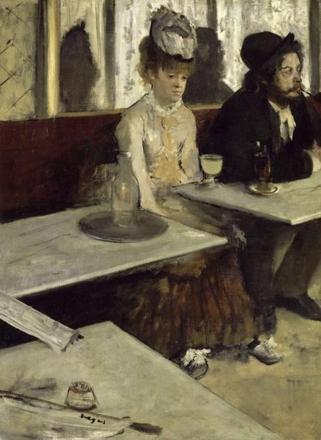

Impressionism
Learn about this period in European art, its origins, and the artists who defined this era.
MenuMost Important Works
Below are a few of the artworks that are considered most important in Impressionism - that both overview the major ideas of the movement, and highlight the greatest achievements by each artist in Impressionism.

Le déjeuner sur l'herbe (1863)-Edouard Manet

Fog, Voisins (1874)-Alfred Sisley

Paris Street, Rainy Day (1877)-Gustave Caillebotte

In a Park (1874)-Berthe Morisot

At the Opera (1880)-Mary Cassatt

L'Absinthe (1876)-Edgar Degas